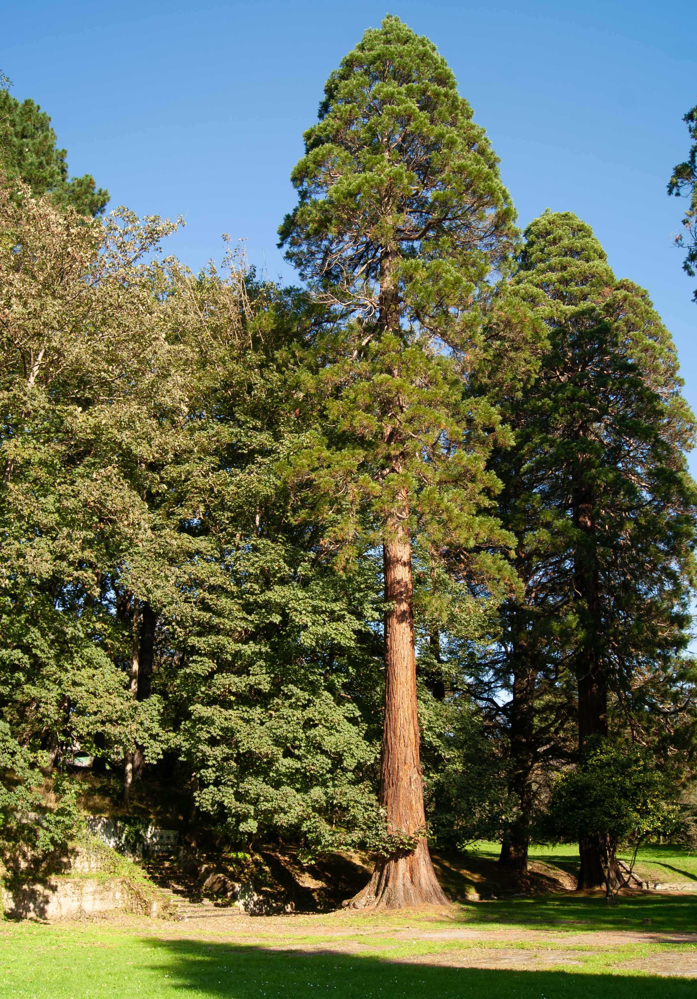

Vídeo del parque que ofrece una vista panorámica de 360º desde el punto de grabación.
Vídeo del parque con vista en 360º
Conocido como El Carbayu
 Ruta de la Acebera
Ruta de la Acebera
El Parque de la Acebera también conocido como la finca de Santa Bárbara o El Carbayu, es un auténtico pulmón para el municipio de Lugones por su riqueza vegetal. Es un bosque centenario con abundantes especies de aves y flora que está situado en los terrenos del antiguo Parque Recreativo Forestal, alejado de la zona urbana.
.jpg)
.png) LA FINCA DE SANTA
BÁRBARA
LA FINCA DE SANTA
BÁRBARAEn 1880 se ubicó la fábrica de explosivos Sociedad Santa Bárbara fundada por José Tartiere. El cierre de la factoría se produjo 100 años después y sus trabajadores se transladaron a la factoria de Galdácano.
A partir de ese momento La Acebera experimenta un gran cambio y se convierte en un oasis para el pueblo de Lugones.
Al no encontrar a nadie que se quiera hacer cargo de
ella, la compra el Ayuntamiento de Siero a La Unión Española de Explosivos Río
Tinto.
.png) PARA TODA LA
FAMILIA
PARA TODA LA
FAMILIA
Se trata de una ruta muy fácil de hacer, cuyo camino va a la vera del río Nora hasta llegar al
parque.
El parque tiene una extensión de 307.442,82 metros cuadrados con 2.000 especies de árboles y arbustos.
Este parque está situado en Lugones y a cinco kilómetros del centro de la ciudad de Oviedo.
.jpg)
La ruta
.png) La Ruta
La Ruta
Después del barrio de La Corredoria y poco antes de llegar al límite con Lugones empieza la ruta. A la altura de una gasolinera se toma la desviación a la izquierda en dirección a la depuradora de Villaperi y se continua por el camino que va pegado a la carretera y al río Nora.
Después nos vamos a encontrar con el puente nuevo, pero no lo cruzaremos, seguiremos recto hasta llegar al puente viejo que cruzaremos y tomaremos el camino de la izquierda hasta llegar al parque. En total son unos 3,5 kilómetros de recorrido.
Puente
.png) El puente viejo
El puente viejo
Se trata de un puente conocido como Puente Vieyu, ubicado en el límite de los concejos de Siero y Oviedo, a pesar de que a día de hoy, no se conoce con exactitud la fecha en el cual fue construido, parece que se remonta a la época romana, posteriormente sus arcos fueron rehechos aprovechando en parte la estructura de apoyo.
A día de hoy, el puente presenta características propias del Alto Medievo (siglo XV).
Se dice que el puente formaba parte del Camino Real y que comunicaba
Lugo de Llanera (Lucus Asturum) con Astorga (Asturica Augusta ).
Explora las Otras Zonas Verdes de Oviedo

Descubre tu refugio natural en Oviedo, explora los diversos oasis y remansos de paz que la ciudad tiene para ofrecer.
Al igual que en los parques, en estas zonas verdes podrás encontrar Naturaleza | Deporte | Bienestar.
.jpg)
.png) Parque La Acebera
Parque La AceberaEn el año 2001 el Ayuntamiento puso en marcha un proyecto de recuperación como zona lúdica con área recreativa.
.png) Instalaciones
InstalacionesLa primera zona de la finca aprovechada por el Ayuntamiento tan pronto se adquirió fue una pista de atletismo y una piscina abierta. Más tarde, allá sobre 1996, en el espacio de la pista de atletismo, se ubicó el campo de fútbol Santa Bárbara.
.jpg)
Árboles poco frecuentes
.png) PARQUE LA ACEBERA
PARQUE LA ACEBERA
Cuenta con 2.000 especies vegetales, entre árboles y arbustos. De ellos poco frecuentes: el pino de Chile, robles americanos o cedros del Líbano, araucarias y hasta secuoyas gigantes.
.jpg)
Naturaleza en vivo
Árboles centenarios
Un Entorno Natural
.png) Naturaleza
Naturaleza
En el parque hay una gran variedad de árboles como por ejemplo: saúcos, castaños, avellanos,
laureles, fresnos, falsas acacias y cerezos. Además de zarzas, enredaderas y sanjuaninos.
Pero sobre todo lo que más llama la atención es un Cedro del Líbano cuya altura
alcanza los 30 metros y se ve majestuoso.
Vive la naturaleza
.png) Disfruta de un día maravilloso
Disfruta de un día maravilloso
En el parque se creó un lago artificial donde se pueden observar peces, tortugas y patos.
Las zonas verdes están llenas de árboles que dan sombra y cobijo a los paseantes y personas que
lo
visitan.
También dispone de un área recreativa con mesas y bancos para disfrutar de un maravilloso día al
aire libre.
Los niños disponen de un parque infantil cerca de la zona de pic-nic.
.jpg)
Ruta La Acebera
A la vera del río Nora
.jpg)
Ruta La Acebera
Variedad de aves
Ruta La Acebera
Pasea con tranquilidad
.jpg)
Ruta La Acebera
Cruza el Puente Viejo
Ruta La Acebera
Disfruta del día
El Parque de La Acebera es un espacio verde que combina a la perfección naturaleza y recreo, convirtiéndose en uno de los lugares más apreciados tanto por los habitantes como por los visitantes de la ciudad. Este extenso parque ofrece amplias áreas de paseo, deportes y descanso, todo ello rodeado de una frondosa vegetación que cambia con el paso de las estaciones.
En nuestro video, te invitamos a explorar la tranquilidad y la belleza de este parque, un verdadero pulmón verde alejado del bullicio. A lo largo del recorrido, descubrirás cómo el Parque de La Acebera es más que un simple lugar de esparcimiento: es un espacio de encuentro, un refugio para quienes buscan desconectar del ajetreo urbano, y un rincón de bienestar para toda la comunidad.

Visita y Descubre
.png) Parque La Acebera
Parque La Acebera
Este parque es muy
popular sobre todo en verano.
Piscinas al aire libre.
Lago artificial.
Zona de pic-nic.
Parque infantil.
Datos de Interés

Parque Abierto
L-D:
8h-00h

Ubicación
48º24'40" N
5º49'20" W

Mascotas
Permitidas

Servicios
Disponibles
Sobre Nosotros
Somos un equipo de desarrolladores web dedicados a crear experiencias únicas.
Nos
esforzamos por transformar la visita a los parques por excelencia de Oviedo en experiencias
digitales visualmente atractivas, intuitivas y fáciles de usar.
© Copyright 2025.
Todos los derechos reservados.

.jpg)
.jpg)